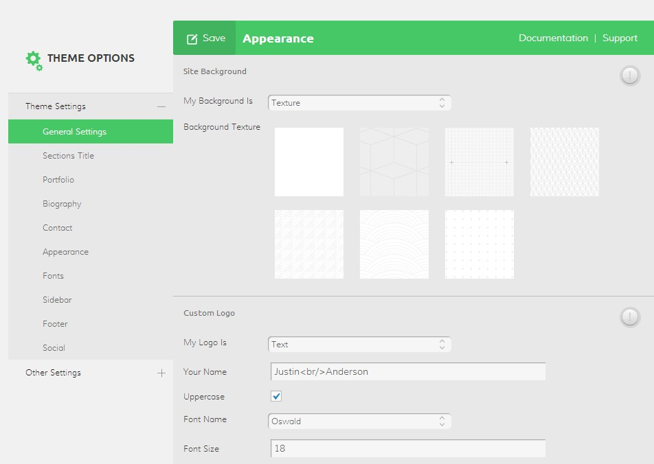

Personage
One Page CV Resume Theme
- created: 07/20/2014
- latest update: 04/16/2016
- by: PixFlow
- themeforest.net/user/PixFlow
- email: pxflow@gmail.com
Thank you for purchasing our theme. If you have any questions that are beyond the scope of this help file, please feel free to contact us via our support forum at support.pixflow.net. Thank you very much.
Introduction
- Responsive and Retina Ready
- Beautifuly animated elements
- Powerful admin panel with Translation ready feature
- User-friendly theme options
- Modern and unique design
- Special resume section
- Unlimited theme color
- Resume print button
- Google Fonts
- 28 animated social icons
- Translation and WPML ready
- SEO optimized
- + 620 Icon Fonts
-
Version 1.6 - 16 April 2016
Wordpress 4.5 Compatible
Demo Importer Improved ( now media and theme setting will import too )
Theme Setting export and import added Custom part ability added ( now you can have cusotm content anywhere you like )
Testimonial responsive issue fixed
Jquery plugins updated -
Version 1.3 - 17 September 2014
Fixed icons error in WordPress 4.0 -
Version 1.2 - 04 August 2014
Added dark skin style to the theme -
Version 1.1 - 02 August 2014
Improved menu functionality in RTL layout
Improved "demo import" functionality -
Version 1.0 - 16 July 2014
Initial release
Web Standard Tests:
We have checked the stracture of our theme and it's successfuly validated as HTML5 and CSS3.
Cross-browser testing:
Tested on major browsers and found it works fine on IE 9.0+, Chrome, Firefox, Opera, Safari and works at its best when viewed with newest version of them. Also this theme is tested on latest version of Android and iOS, HTC phones, iPhone 5s, iPad Air and it was working fine on all of them.
Creadits:
- Isotope by David DeSandro / Metafizzy
- TweenMax by Jack Doyle
- Superfish by Joel Birch
- FlexSlider by Tyler Smith
- GMAP3 by DEMONTE Jean-Baptiste
- Magnific Popup by Dmitry Semenov
Setup Guide
What kind of hosting service do i need to use this theme?
You need PHP 5.2 or higher installed on your hosting and you need to be able to change read/write permission of your files. Also you need wordpress 3.9.1 or higher installed on your server.
Instalation:
First Download & Install WordPress 3.9.1 (or higher).
Upload “personage” folder via FTP into [wordpress folder] /wp-content/themes/
Notice: After uploading theme to your hosting you must:
Set CHMOD 775 to folder “your_site/wp-content/themes/personage/”
In “Appearance > Themes > Manage Themes > Available Themes” activate “Personage” by hitting appropriate “Activate” link.
1- now its time to change your menu item to make personage theme works , go to appearance -> menu
2 - remove all items that have the invalid error on them ( if you had any , if not just go to step 3 )
3 - now all of home section items like about , portfolio , resume should be inserted as Custom link , you can see the custom link section on right panel as showed in following image

4 - each custom link has two part , URL and link text , put any link text you want but use following address for each item
** We assume your website address is http://example.com , you can find your site url by going to setting -> general -> WordPress Address (URL)
http://example.com/#intro : for intro section
http://example.com/#skill : for skills section
http://example.com/#portfolio : for portfolio section
http://example.com/#contact : for contact section
http://example.com/#education : for education section
http://example.com/#testimonial : for testimonial section
http://example.com/#experience : for experience section
Now its time for final step , on appearance -> menu , click on "Screen Options"
now click "CSS Classes" to make it available , now if you click on menu item that used for contact section, you will see a new text box named "CSS Classes (optional)"
enter "contactitem" in it and save your menu
** Make sure you set this menu to "primary menu" in appearance -> menu
5 - Now Create a page and name it as you like , then select "Main page" for its template
6 - Now go to setting -> reading , choose A static page (select below) option , and then for front page , choose the page you just created
7 - From here everything should work fine and you only need to go to appearance -> theme setting , and start to config the layout of website and creating skills , eudcation and experience by going to their pages in admin panel
How does Personage work?
Personage is using page theme settings to create your one page website. It gives you a powerful yet simple platform to build a beautiful one page CV website.
Page Templates:
Promotion comes with 2 page templates:
- Default template
- Main Page
Default template: this template gives you a boxed layout with sidebar option along with other options. It means that your content goes inside an invisible box in center of your website. You can use this template for your blog page.
Main page: this template is used for creating your website main page. All you have to do is to give it a name and set it as your front page.
How to create front page?
To create front page navigate to Pages --> Add new, you can give this page a title of "Main page". Select the "Main Page" template from the Page Attributes section. Now you can see that the text editor disappears.
Now all you need to do is to press the "Publish" button.
When you created your new page using "Main page" template, go to Settings --> Reading and set the “Front Page Displays” setting to "A static page" and choose the page you just created as front page. Your front page is ready.
Now you have to go to "appearance > menus" and add the sections to your menu and set the menu as your primary and mobile navigation.
You have to open "Home section" on left column and add the sections inside it to your menu, then check the primary and mobile navigation box and save the menu.
How to create Blog page?
To create blog page navigate to Pages --> Add new, you can give this page a title of "Blog", you do not have to enter any content , then Press "Publish" button. When you have created your new page, go to Settings --> Reading and set the “Front Page Displays” setting to "A static page" and choose the page you just created as posts page.
How to use different post formats?
When you want to create a new post using "Posts > add new", 5 post formats are available:
Standard: This one is a normal WordPress format for blogging.
Quote: You can used this format for making a quote post, Post title will be shown as who said the quote and editors text will be shown as quote.
Video: This post format is for creating a video post, you can enter the youtube or vimeo URL in setting box below the text editor and enter the description in text editor.
Audio: This post format is for creating a audio post, you can enter the SoundCloud URL in setting box below the text editor and enter the description in text editor.
Gallery: This one is like standard post format, but you may have several images shown in a slider when you enter the blog detail page.
How to add Biography section
To create biography section navigate to Appearance --> Theme Settings --> Biography. Here you can see the different settings and entries to create biography section.
Here are the explaination of each option:
Intro Section. Height: Here you can set the height of biography section, remember not to use px and just used a solid number like 1024.
In next options you can enter a title for your biography( for example your name), add your image and your signature image.
To add your actual biography, use Bio Text.
Next options are "Background setting", you can choose to use image, video or the option of not showing a background. If you choose image, you can add more than one image and make a background slider. Also the first image will be shown as the background in mobile and tablets.
If you choose video, alternative image is the image that is shown instead of video in tablet and mobile devices. Also the best format for video background is .webm .
The last options is "Overlay setting", you can choose a layer with opacity or some premade patterns to be shown on top of biography section background.
In the end you just have to press Save on top section of form.
How to create portfolio section
To create a portfolio section, you don't need to create a page. You just need to add portfolio items, these portfolio items will automatically load in main page.
How to add portfolio item?
Here is how:
- In wordpress admin dashboard go to Portfolio > Add New
- Enter portfolio title in the Title field
- To add or select skill types go to Skill box next to the editor (To add new skill type, Click on Add new category link and enter each skill name and press Add new category button at the bottom.)
- To show the thumbnail of porfolio item in portfolio section you have to Add a "Featured image" to the item.
- Inside Portfolio Options box you can add images of your portfolio(which will be shown as a slider) or enter a youtube/vimeo video id, you can also add a sound cloud URL for adding audio to your portfolio item. Based on "Portfolio media type" images, video or audio will be shown inside the portfolio details pop up.
- now press publish button to save your item.
How to create resume section?
To create resume section, you don't need to create a page. You just have to add resume items like experiences, educations, skills and etc. Resume items will automaticaly load in main page.
How to add an experience to resume section?
- In wordpress admin panel go to Experience > Add New
- Enter any name you like in experience title field, you can leave it empty
- In Experience options, enter the title of your experience
- In Experience Duration enter the time you spend on that experience
- In Experience Description enter any information or description about that experience
- Then choose an icon for that experience
- Click the "publish" button
How to add an education to resume section?
- In wordpress admin panel go to Education > Add New
- Enter any name you like in education title field, you can leave it empty
- In Education options, enter the title of your education
- In Education Duration enter the time you spend on that education
- In Education Description enter any information or description about that education
- Then choose an icon for that education
- Click the "publish" button
How to add a testimonial to resume section?
- In wordpress admin panel go to Testimonial > Add New
- Enter any name you like in testimonia title field, you can leave it empty
- In Testimonial options, enter the name of the person who said the quote
- In subtitle field, enter his/her position or additional information about the person who said the quote
- In description, enter tha actual quote
- Then upload the image of person who said the quote
- Click the "publish" button
How to add a skill to resume section?
- In wordpress admin panel go to Skill > Add New
- Enter any name you like in skill title field, you can leave it empty
- Enter the title of your skill in skill title
- Enter the number of your progress in skill percent, for example 85
- Click the "publish" button
How to add Contact section
To create add contact section navigate to Appearance --> Theme Settings --> Contact. Here you can see the different settings and entries to create contact section.
In this box, the first options are "Contact Information", you can enter a title for contact information, enter your address, email and phone. The last field in this section is contact form selector, you should create a contact form in "admin dashboard > Contact" and select it here.
Next option is "Media type", you can choose to image, map or the option of not showing a background.
If you choose map, you can set a beautiful map with different settings like it's general style, zoom level, address, latitude, longitude and a marker to show your location on map.
Other Theme Settings Options
To navigate to Admin control panel or theme settings, you should go to appearance > theme settings.
Here we describe each option for you:
General Settings:
General settings includes website basic settings.
Site Background: Here you can choose Color or Texture as your website background.
Custom Logo: Here you can choose a png image or a text as your website and set it's settings.
Custom Favicon: Here you can enter a custom favicon which will be shown next to your website name in browser tabs.
Print Setting: Here you can choose the print button functionality, you can set it to print your website in a beautiful style or upload a file to be downloaded as your resume.
Animation Setting: you can disable or enable the animation of your website content here.
Oval Sticky Navigation Visibility: Sticky Navigation is the small oval navigation on right side of screen which comes with you when you scroll between the sections of website. You can choose to show or not to show the Sticky Navigation.
Sections Title: Here you can set a title for different sections of your website.
Portfolio Setting: Here you can enter the number of portfolio posts you want to display in your website before you click load more button. Enter -1 to display all posts.
Appearance:
Here you can choose theme colors.
Preset Color: Here you can choose a preset color we have included on this theme or choose the custom option to make your own color combination.
General Color: It's the color of most colorful elements.
Content Color: It's the color of texts.
Highlight Color: It's the color of text and elements when you select them.
Link Color: Here you can choose normal color and hover color of links.
Fonts:
Here you can choose the fonts for your website.
Body Font: Here you can select your desired font name for contents.
Navigation Font: Here you can select your desired font name for header navigation area.
Headings Font: Here you can select your desired font name for headins and titles.
Sidebar:
Here you can set the sidebar settings.
Single Blog Post Sidebar: Here you can select a sidebar for blog detail pages.
Custom Sidebar: Here you can create custom sidebars.
Page Sidebar Position: Here you can choose to have left or right sidebar in pages which have sidebar.
Footer:
Here you can set the footer options.
Widget Areas: Here you choose the layout of footer widget area.
Copyright Text: Here you can enter your footer copyright text.
Social:
Here you can enter your social network addresses, if you leave them empty, they will not be shown in your website.
Other Settings:
Here you have Additional Scripts and API Key option.
Additional Script: Here you can enter any custom javascript or CSS. Note that for using javascript, you should NOT use <script></script> tags.
API Key: Here you can enter your Google API key for using google map.
Dummy Data: Here you can import our demo website content into your website.
How to use twitter widget
To use twitter widget follow these steps:
4. In next page enter the required information and continue
Click on "OAuth Tool" tab and copy the following keys into Twitter Widget
Best image sizes
Here are the best image sizes for different website images:
Biography image: 180x180 pixel
Biography background image: 1920x1080 pixel
Portfolio item thumbnails( featured image ): 380x226 pixel
Blog post thumbnails( featured image ): 850x360 pixel
Contact background image: 570x470 pixel